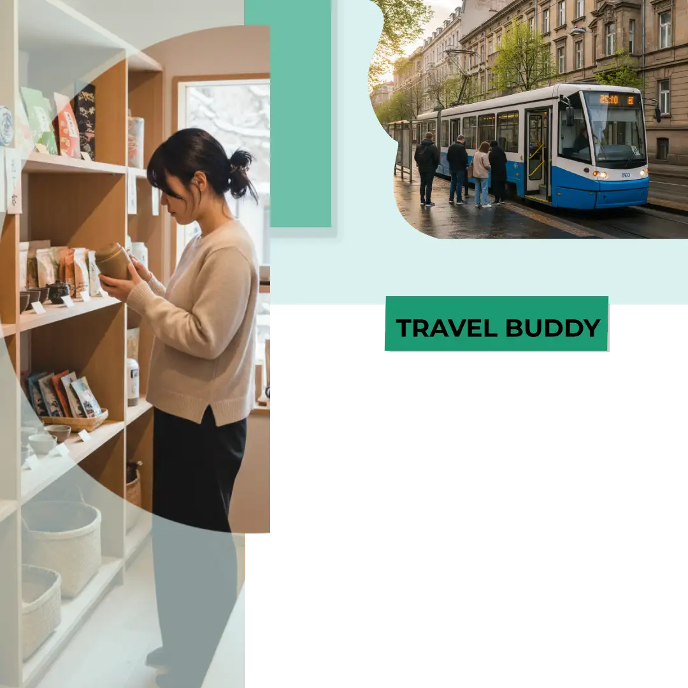
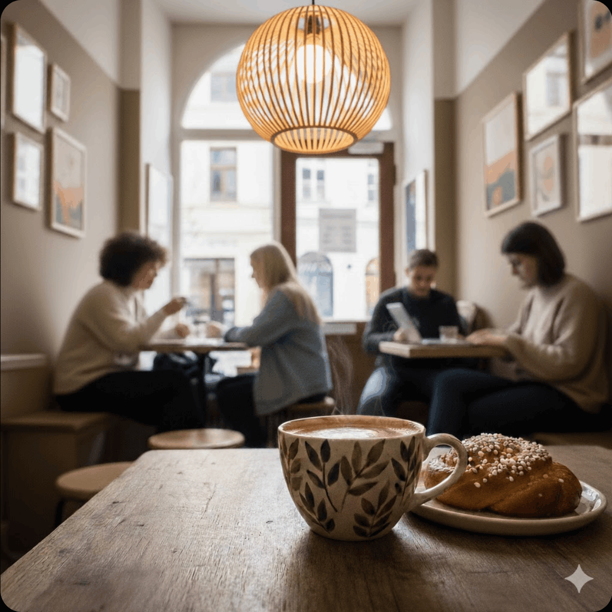

Welcome
Street by street. Forget the usual tourist routes. Discover cafés, beaches, and neighborhoods that you stumble upon by accident—and that will stay with you forever.
Moikka
Our service connects travelers with local guides who share their everyday city life. Instead of rushing from one attraction to another, you explore at a slower pace and experience places that feel real and personal. The goal is not to see everything, but to feel something meaningful. Every walk is built around curiosity, conversation, and genuine moments.
Discover

Discover small markets, local art, and quiet corners that most visitors miss.
Explore

Find your favorite story around every corner.